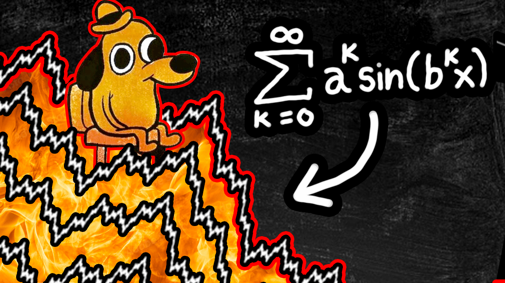

Travaux de recherche
- Diffusion-approximation for a kinetic spray-like system with
random forcing : publication,
(arXiv,
HAL)
- Weak and strong mean-field limits for stochastic Cucker-Smale
particle systems : arXiv,
HAL
- Existence of martingale solutions for stochastic flocking
models with local alignment : arXiv,
HAL
- Re-arranged Dirichlet distributions and the emergence of a
logarithmic Zipf's law : HAL
Documents divers et jolis problèmes
- Petit guide introductif aux limites de champ moyen 📖 PDF
- Preuve élémentaire du Théorème Central Limite pour des lois de
Bernoulli 📖 PDF
- L'intuition derrière le changement de variable 📖 PDF
- Une approche vulgarisée du problème de Bâle 📖 PDF
- Un vieil exposé rigolo sur un toy-model de Tennis 📖 PDF
- Un joli code Matlab illustrant l'algorithme de Metropolis-Hastings
avec des images 💾 ZIP
- Théorème de Heine pour les groupes topologiques 📖 PDF
- Un petit jeu illustrant un modèle de traffic routier 🚗 JEU
(itch.io)
Vidéos [▸]
Vulgarisation sur Youtube : @mathemelo
